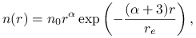
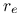
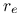

Defines how ice water content and effective particle radius are translated
to optical properties.
ic_properties property [interpolate]
Possible choices for property are
- fu
-
Parameterization by Fu1996,Fu1998, see ic_file; this is the default setting. Note that this is a parameterization which has been created to calculate fluxes but not radiances. Note also that the optical properties in the solar range provided by Fu1996 are delta-scaled properties (that is, the forward peak of the phase function is truncated and optical thickness, asymmetry parameter, and single scattering albedo are reduced accordingly), whereas uvspec uses non delta-scaled properties unless the option ic_fu deltascaling on is specified. By default the parameterization by Fu1996 is treated consistently with all other ice cloud parameterizations. For wavelengths up to 4 micrometer Fu1996 is used while for wavelengths larger than 4 micrometer Fu1998 is chosen. Please note that Fu1996 is based on ray-tracing calculations while Fu1998 is a mixture of ray-tracing and Mie calculations (which is required for the infrared wavelengths where the geometrical assumption does not hold). Hence, both parameterizations are not fully consistent. Rather, differences of some % are to be expected in the wavelength region where both parameterizations overlap. Also, the wavelength dependence in the solar and infrared parts is treated differently: In the solar part Fu1996 the optical properties are defined for wavelength bands - hence they are assumed constant within each band. In the infrared Fu1998 they are defined at certain wavelengths and linearely interpolated in between. If you use this option, please see also the discussion of ic_fu deltascaling and ic_fu reff_def. The allowed range for the effective radius is from 9.315 - 65.120 micrometer.
- echam4
-
Use the simple two-band parameterization of the ECHAM4 climate model, described in []; this is probably only meaningful if you want to compare your results with ECHAM4, the two bands are 0.2 - 0.68 micrometer and 0.68 - 4.0 micrometer. Within the two ECHAM4 bands, the optical properties are assumed constant.
- key
-
Parameterization by Key2002. This parameterization can also be used to calculate radiances because it uses a double-Henyey-Greenstein phase function which better represents both forward and backward peaks. This parameterization covers the wavelength region from 0.2 to 5.0 micrometer and is available for the following habit: solid-column, hollow-column, rough-aggregate, rosette-4, rosette-6, and plate.
- yang
-
Parameterization similar to Key2002 but based on more recent single scattering calculations. Below 3.4 micrometer it actually equals the Key2002 parameterization while from 3.4 - 100 micrometer new coefficients have been calculated with much higher wavelength resolution and better accuracy. Hence, yang should give a reasonably consistent approximation from 0.2 - 100 micrometer, suitable for spectrally resolved calculations of radiance and irradiance. The covered range for the effective radius depends on the ic_habit. (In micrometer: solid-column [5.96, 84.22], hollow-column [4.97, 70.24], rough-aggregate [3.55, 108.10], rosettes-4 [2.77, 45.30], rosettes-6 [2.85, 46.01], plate [4.87, 48.18], dendrites [0.45, 1.88], droxtal [9.48, 293.32], spheroid [6.58, 203.39]).
- baum
-
Use ice cloud parameterization from baum05a:_bulk,baum05b:_bulk, http://www.ssec.wisc.edu/\~baum/Cirrus/IceCloudModels.html. In combination with the radiative transfer solvers cdisort, montecarlo, and fdisort2, accurate phase functions are used.
- baum_hufit
-
Similar to the option baum but here the phase function is parameterized by 128 Legendre coefficients, calculated with the delta-fit method from Hu2000. This parameterization covers the region from 0.4 to 2.2 micrometer. If high accuracy is needed e.g. in the vicinity of the halo, the forward peak, or the backscatter peak, ic_properties baum is recommended.
- hey
-
Use pre-calculated ice cloud optical properties including full phase matrices. This option has newly been implemented and is not yet well validated. Please check your results carefully!! The parameterization is currently only available for the spectral region from 0.2 to 5 micrometers. The single scattering properties have been been generated by Hong Gang using the models by Yang2000. The parameterization is based on simple gamma distributions
 (1) where
 is found by normalization and
is found by normalization and  is set to 1. In case of
spherical particles the parameter  would be the effective
radius. For aspherical particles, the parameter is found
iteratively so that the size distribution yields the required
effective radius. The
parameterization is availabe for the following habits: solid-column,
hollow-column, rough-aggregate, rosette-6,
plate, and droxtal. The
default habit is solid-column. The habit can be specified using the option
ic_habit.
is set to 1. In case of
spherical particles the parameter  would be the effective
radius. For aspherical particles, the parameter is found
iteratively so that the size distribution yields the required
effective radius. The
parameterization is availabe for the following habits: solid-column,
hollow-column, rough-aggregate, rosette-6,
plate, and droxtal. The
default habit is solid-column. The habit can be specified using the option
ic_habit. - ic-mie
-
Use pre-calculated Mie tables; useful for mol_abs_param; the tables are expected in data_files_path/correlated_k/.../. For spectral or pseudo-spectral calculations the optional argument interpolate has to be defined explicitely to initiate the interpolation of the optical properties to the internal wavelength grid. Note that a Mie calculation assumes spherical ice particles, the scattering function of which differs systematically from non-spherical particles. Hence, ic_properties mie is usually not representative of natural ice clouds.
- filename
-
Read optical properties from specified filename; file format is as produced by the mie tool of libRadtran (see output_user netcdf).
The default property is fu.
Please note also that, in contrast to spherical particles, there is no unique definition of effective size for non-spherical particles. In particular, the above parameterizations use different definitions which, however, differ only by a constant factor. Yang2000, citeKey2002, and baum05a:_bulk,baum05b:_bulk use the general definition
 |
(2) |
where  is the maximum dimension of an ice crystal,
is the maximum dimension of an ice crystal,  is the
number of particles with maximum dimension
is the
number of particles with maximum dimension  in the size distribution,
and
in the size distribution,
and  and
and  are the volume and mean
projected area of the particles, respectively. The volume and area are
based on the spherical diameter with equivalent volume and the
spherical diameter with equivalent projected area as defined by
Yang2000. On the other hand, Fu1996,Fu1998 use
hexagonal columns and use the following definition
are the volume and mean
projected area of the particles, respectively. The volume and area are
based on the spherical diameter with equivalent volume and the
spherical diameter with equivalent projected area as defined by
Yang2000. On the other hand, Fu1996,Fu1998 use
hexagonal columns and use the following definition
 |
(3) |
where  is the width of the ice crystal (that is, the maximum diameter of the
hexagonal area) and
is the width of the ice crystal (that is, the maximum diameter of the
hexagonal area) and  is the length. The integrand in the numerator is proportional
to the volume while that in the denominator is proportional to the projected area.
Evaluating these formulas one finds that, for the same hexagonal particle, the effective
radius would be
is the length. The integrand in the numerator is proportional
to the volume while that in the denominator is proportional to the projected area.
Evaluating these formulas one finds that, for the same hexagonal particle, the effective
radius would be  times larger following the
Yang2000, Key2002 definition rather than the Fu1996,Fu1998 definition.
As an example, an effective radius of 20
times larger following the
Yang2000, Key2002 definition rather than the Fu1996,Fu1998 definition.
As an example, an effective radius of 20 with
ic_properties fu and ic_fu reff_def on and
1.299
with
ic_properties fu and ic_fu reff_def on and
1.299  20
20 = 26
= 26 with ic_properties yang would give comparable results
for hexagonal columns.
To use the original definition of the effective radius by Fu1996,Fu1998 use
ic_fu reff_def on!
with ic_properties yang would give comparable results
for hexagonal columns.
To use the original definition of the effective radius by Fu1996,Fu1998 use
ic_fu reff_def on!
With the optional argument interpolate the ice cloud optical properties are interpolated over wavelength; useful for precalculated optical property files defined with ic_properties. Please note that this option may be extremely memory-consuming because for each internal wavelength a full set of Legendre moments of the phase function is stored (up to several thousands).